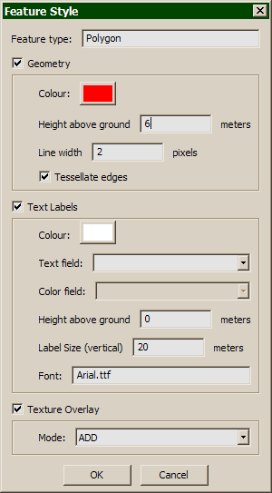

The Style Dialog defines the visual style for an Abstract Layer. You can define the style for a layer by pressing Style... under Abstract Layers in the Terrain Properties. Each of the possible feature types can be displayed as follows.
2D/3D Points
- Text Labels. The label will float above the terrain at the indicated height above ground. You can specify font. If you are using a non-English language, be sure to choose a font that supports your character set. For example, on Windows, ArialUni.ttf instead of the default Arial.ttf will support nearly everyting.
2D/3D Polylines
- Geometry. 2D polylines will be draped on the terrain. You can specify height above the ground. 3D polylines will be drawn at their own elevation. The 'Tesselate edges' option means that every segment of the polyline is split into a lot of small segments, so that it can drape more smoothly on uneven terrain.
2D Polygons
- Text Labels. The label will float above the terrain at the centroid of the polygon.
- Geometry. 2D polylines will be draped on the terrain.
- Texture Overlay. (Experimental) The polygons will be rasterized to a 1024x1024 texture overlay, using the geometry color. Texture mode can be ADD (color is added), MODULATE (color multiplies), or DECAL (color is shows directly).
